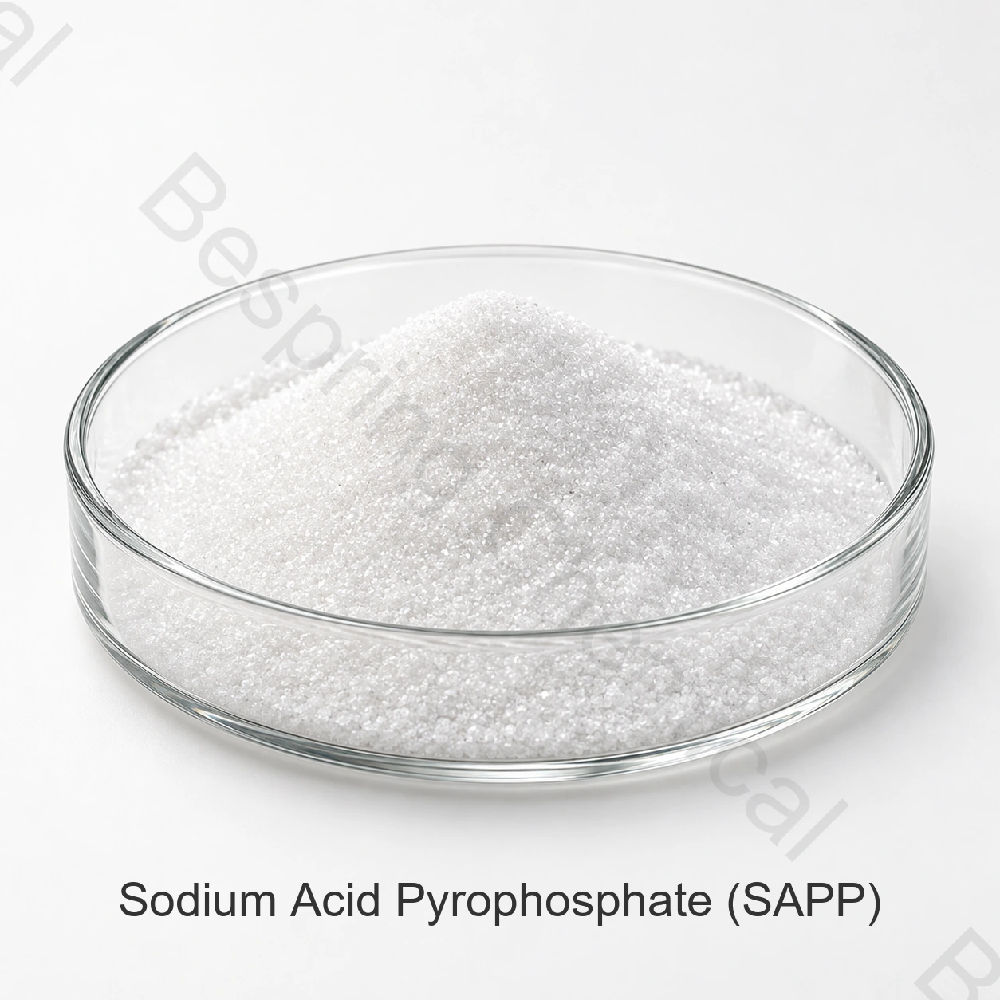

Reaction rate or gas-release curve
Ask what percentage of available carbon dioxide is released during the stated time, temperature and test system. Match it to mixing, depositing, bench, chilling/freezing and heating time.
Food grade leavening phosphate · E450(i) / INS 450(i)
Source SAPP for controlled acid–bicarbonate leavening and selected potato color-control processes. Specify the reaction-rate grade, neutralizing value, particle profile and end use before approving a supply.

Product identity
Sodium acid pyrophosphate is the acidic disodium salt identified by JECFA as disodium dihydrogen diphosphate, INS 450(i). JECFA describes it as a white crystalline powder or granules, soluble in water, with raising-agent, buffering-agent and sequestrant functions.
In a chemical leavening system, SAPP supplies acid that reacts with sodium bicarbonate to release carbon dioxide. Commercial grades are not automatically interchangeable: their gas-release timing can change batter holding tolerance, oven lift, product geometry, crumb and finished pH.
The defining purchase decision
Public technical literature describes commercial SAPP grades with different dough reaction rates. A grade number is meaningful only with its supplier's test method and specification; Bespring should not infer a SAPP 15, 28 or 40 designation unless the current product documents state it.
Ask what percentage of available carbon dioxide is released during the stated time, temperature and test system. Match it to mixing, depositing, bench, chilling/freezing and heating time.
NV expresses the parts of sodium bicarbonate neutralized by 100 parts of leavening acid. Industry references place SAPP near 72, but the contracted grade value and calculation basis must come from the current specification.
Granulation affects dry-blend uniformity, dissolution and reaction behavior. Compare mesh data and flowability when qualifying a replacement grade.
Measure batter or dough pH, gas retention, volume, shape, crumb, browning, taste and process tolerance in the customer's own formula.
Do not substitute on assay alone: two materials can both meet a ≥95% assay while producing different leavening behavior. Request reaction-rate, NV and particle-size data before a plant trial.
Application-specific validation
Permission and maximum use depend on the destination market and food category. These pathways describe technical screening, not a universal use authorization or dosage.
Balance early gas for batter expansion or fryer buoyancy with gas retained for heating. Check deposit time, volume, symmetry, crumb, oil uptake and aftertaste.
Reaction timing and finished pH can affect spread, lift, surface character and browning. Validate bicarbonate balance and particle distribution.
Review compatibility with bicarbonate and any second leavening acid, then protect the blend from moisture that could trigger premature reaction.
Screen slower profiles where gas must be preserved through cold holding, thawing or delayed bake-off. Confirm stability in the full process rather than relying on a grade label.
A different SAPP buying intent
USDA's technical evaluation reports that SAPP is used as a sequestrant in processed potatoes to inhibit after-cooking darkening associated with iron–phenolic reactions. This is a different performance target from bakery leavening and should not be qualified with bakery reaction-rate data alone.
Commercial data with method boundaries
The table reproduces Bespring's supplied commercial limits. It is not a batch COA or a claim of universal compliance. Obtain the signed specification, methods and current COA before approval.
| Test item | Unit | Supplied limit | Qualification note |
|---|---|---|---|
| SAPP assay | % | ≥95.0 | Confirm dry-basis method |
| Appearance | — | White powder | JECFA also permits crystalline granules |
| Water-insoluble matter | % | ≤1.0 | Method should match contract |
| Loss on drying | % | ≤0.5 | JECFA method: 105°C for 4 h |
| pH, 1% solution | — | 3.5–4.5 | Differs from JECFA 3.7–5.0 range |
| Fluoride (F) | mg/kg | ≤10 | Matches JECFA limit |
| Arsenic (As) | mg/kg | ≤3 | Matches JECFA limit |
| Lead (Pb) | mg/kg | ≤4 | Matches JECFA limit |
| Cadmium (Cd) | mg/kg | ≤1 | Supplied commercial parameter |
| Mercury (Hg) | mg/kg | ≤1 | Supplied commercial parameter |
| Heavy metals (as Pb) | mg/kg | ≤15 | Not the same test as lead (Pb) |
JECFA lists assay ≥95%, pH 3.7–5.0 for a 1-in-100 solution, loss on drying ≤0.5%, water-insoluble matter ≤1%, fluoride ≤10 mg/kg, arsenic ≤3 mg/kg and lead ≤4 mg/kg.
Open the JECFA specificationReaction-rate grade, test curve, neutralizing value, P2O5, particle-size distribution, bulk density and shelf life are not stated in the supplied table. These must be confirmed rather than invented.
Replacement and approval workflow
State the exact baked product, dry mix, cold-chain process or potato treatment and destination country.
Review the current specification, TDS, SDS, COA, test methods and only those certificates that apply to the quoted product and site.
For leavening, compare reaction curve, NV and mesh data. For potatoes, compare treatment conditions and color-control results.
Use the approved benchmark and document process settings, finished pH, volume or color, sensory result and hold stability.
Packing, storage and logistics
Buyer questions
Industry literature commonly relates the grade number to a measured reaction rate, but suppliers may state test conditions differently. Treat the number as incomplete unless the TDS defines the method, time, temperature and bicarbonate system.
No. SAPP is acidic disodium dihydrogen diphosphate, INS 450(i), with formula Na2H2P2O7. Tetrasodium pyrophosphate is an alkaline phosphate, INS 450(iii), with different chemistry and applications.
Not on assay alone. Compare reaction rate, neutralizing value, particle size and finished-product performance. A plant trial should reproduce mixing, holding, temperature and bake or fry conditions.
USDA technical literature describes its use as a sequestrant to limit iron-related after-cooking darkening. The treatment must be validated for the potato type, process, target market, color, flavor and texture.
Provide the application, required reaction-rate grade and method, NV, particle size, specification or benchmark COA, quantity, packing, destination, regulatory standard and required documents.
Substantive content review: 2026-08-22 · Independent identity and function references: FAO/WHO JECFA and USDA technical literature.
Specification-led sourcing
For a comparable proposal, identify the functional grade—not only “SAPP food grade.”